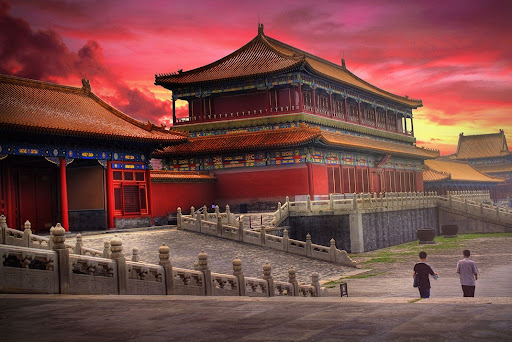
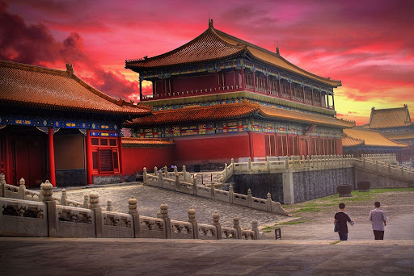

Known as the heart of Beijing, China
THE FORBIDDEN CITY
Let's Start With The Basics
- The Forbidden City is the imperial palace complex in the center of the Imperial City in Beijing, China.
- It was the residence of 24 Ming and Qing dynasty Emperors, and the center of political power in China for over 500 years from 1420 to 1924.
- The palace is now administered by the Palace Museum. As a UNESCO World Heritage Site, it is one of the most popular tourist attractions in the world.
- The Forbidden City is arguably the most famous palace in all of Chinese history, and is the largest preserved royal palace complex still standing in the world.
- The Forbidden City was constructed from 1406 to 1420, and was the imperial palace and winter residence of the Emperor of China from the Ming dynasty (since the Yongle Emperor) to the end of the Qing dynasty, between 1420 and 1924.
Home Of Emperors
The Forbidden City served as the home of Chinese emperors and their households and was the ceremonial and political center of the Chinese government for over 500 years. Since 1925, the Forbidden City has been under the charge of the Palace Museum, whose extensive collection of artwork and artifacts was built upon the imperial collections of the Ming and Qing dynasties. The Forbidden City was declared a World Heritage Site in 1987.
Value & Area
The complex claims to consist of 9,999 rooms in total, although experts have shown in recent years that the number only amounts to 8,886, covering 72 ha (720,000 m2)/178-acre. The palace exemplifies the opulence of the residences of the Chinese emperor and the traditional Chinese palatial architecture, and has influenced cultural and architectural developments in East Asia and elsewhere. It is listed by UNESCO as the largest collection of preserved ancient wooden structures in the world. Since 2012, the Forbidden City has seen an average of 14 million visitors annually, and received more than 19 million visitors in 2019. In 2018, the Forbidden City's market value was estimated at US$70 billion, making it both the world's most valuable palace and the most valuable piece of real estate anywhere in the world.
Importance For Their Citizens
It was listed as the first batch of national key cultural relics in 1961. The palace is extremely important to the Chinese public and nation, who often view it as a cultural and heavenly link to their ancestors.
Inner Court or the Northern Section
The Inner Court is separated from the Outer Court by an oblong courtyard lying orthogonal to the city's main axis. It was the home of the Emperor and his family. In the Qing dynasty, the Emperor lived and worked almost exclusively in the Inner Court, with the Outer Court used only for ceremonial purposes.
Etymology
The palace gained its name from its enormous scale and severely restricted access to all but the Emperor, the Imperial family, and Eunuchs; hence the Chinese term "Forbidden City" emerged. The punishment for unauthorised entry to the palace was immediate execution. The common English name "Forbidden City" is a translation of the Chinese name Zijincheng , which first formally appeared in 1576. Another English name of similar origin is "Forbidden Palace," though "city" is much closer to the original Chinese meaning.The name "Zijincheng" has significance on many levels. Zi, or "purple", refers to the North Star, which in ancient China was called the Ziwei Star, and in traditional Chinese astrology was the heavenly abode of the Jade Emperor. The surrounding celestial region, the Ziwei Enclosure, was the realm of the Jade Emperor and his family. The Forbidden City, as the residence of the terrestrial emperor, was its earthly counterpart. Jin refers to a prohibition or taboo. Cheng originally meant a castle, fortress, or fortification, but in modern Chinese, the character means city.Today, the site is most commonly known in Chinese as Gugong, which means the "Former Palace". The museum which is based in these buildings is known as the "Palace Museum". In the Ming and Qing dynasties, the Forbidden City was also known as Danei or "Palace City".
Structure Of The Forbidden City
The Forbidden City is a rectangle, measuring 961 m (3,153 ft) from north to south and 753 m (2,470 ft) from east to west. It consists of 980 surviving buildings with 8,886 bays of rooms. A common myth states that there are 9,999 rooms including antechambers, based on oral tradition, but it is not supported by survey evidence. The layout of the Forbidden City protected the imperial code of ethics as a physical installation. The courtyard was built on a massive, luxurious scale but it has the appearance of an ordinary quadrangle courtyard. The Forbidden City was designed to be the centre of the ancient, walled city of Beijing. It is enclosed in a larger, walled area called the Imperial City. The Imperial City is, in turn, enclosed by the Inner City; to its south lies the Outer City.The Forbidden City remains important in the civic scheme of Beijing. The central north–south axis remains the central axis of Beijing. This axis extends to the south through Tiananmen Gate to Tiananmen Square, the ceremonial centre of the People's Republic of China, and on to Yongdingmen Gate. To the north, it extends through Jingshan Park to the Drum Tower and Bell Tower. This axis is not exactly aligned north–south, but is tilted by slightly more than two degrees. Researchers now believe that the axis was designed during the Yuan dynasty to be aligned with Shangdu, the other capital of their empire.
HISTORY
When the Hongwu Emperor's son Zhu Di became the Yongle Emperor,
he moved the capital from Nanjing to Beijing, and construction began in 1406 on what would become the Forbidden City.
Construction lasted 14 years and required more than a million workers. Material used include whole logs of precious
Phoebe zhennan wood found in the jungles of south-western China, and large blocks of marble from quarries near Beijing.
The floors of major halls were paved with "golden bricks" , specially baked paving bricks from Suzhou.
From 1420 to 1644,
the Forbidden City was the seat of the Ming dynasty. In April 1644, it was captured by rebel forces led by Li Zicheng, who
proclaimed himself emperor of the Shun dynasty. He soon fled before the combined armies of former Ming general Wu Sangui and
Manchu forces, setting fire to parts of the Forbidden City in the process.By October, the Manchus had achieved supremacy
in northern China, and a ceremony was held at the Forbidden City to proclaim the young Shunzhi Emperor as ruler of all China
under the Qing dynasty. The Qing rulers changed the names on some of the principal buildings to emphasise "harmony" rather
than "supremacy",[18] made the nameplates bilingual (Chinese and Manchu),[19] and introduced shamanist elements to the palace.
In 1860, during the Second Opium War, Anglo-French forces took control of the Forbidden City and occupied it until the end
of the war.[21] In 1900 Empress Dowager Cixi fled from the Forbidden City during the Boxer Rebellion, leaving it to be occupied
by forces of the treaty powers until the following year. After being the home of 24 emperors — 14 of the Ming dynasty and 10
of the Qing dynasty — the Forbidden City ceased being the political centre of China in 1912 with the abdication of Puyi, the
last Emperor of China. Under an agreement with the new Republic of China government, Puyi remained in the Inner Court, while
the Outer Court was given over to public use, until he was evicted after a coup in 1924. The Palace Museum was then
established in the Forbidden City in 1925. In 1933, the Japanese invasion of China forced the evacuation of the national
treasures in the Forbidden City. Part of the collection returned at the end of World War II, but the other part was
evacuated to Taiwan in 1948 under orders of Chiang Kai-shek, whose Kuomintang was losing the Chinese Civil War.
This relatively small but high quality collection was kept in storage until 1965, when it again became public as the core
of the National Palace Museum in Taipei.After the establishment of the People's Republic of China in 1949, some damage
was done to the Forbidden City as the country was swept up in revolutionary zeal. During the Cultural Revolution,
however, further destruction was prevented when Premier Zhou Enlai sent an army battalion to guard the city.
The Forbidden City was declared a World Heritage Site in 1987 by UNESCO as the "Imperial Palace of the Ming and Qing Dynasties",
due to its significant place in the development of Chinese architecture and culture.
In the early 21st century, the Palace Museum carried out a sixteen-year restoration project to repair and restore all buildings
in the Forbidden City to their pre-1911 state, with the goal that 76% of the palace would be open to the public by 2020.
As a result of that project, the Shoukang Palace was officially opened to the public in 2013, after initially being displayed
in its original state. A sculpture museum was opened in the Cining Palace in 2015. Also opened in 2015 were the precincts around
Cining Palace, the Yanyin Building and the Donghua Gate.
On the 5 November 2024, 100 years was marked since the expulsion of the last Emperor of China, Puyi, from the palace by republican
forces, led by Feng Yuxiang.


 
